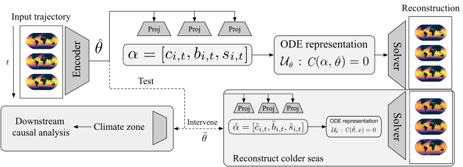
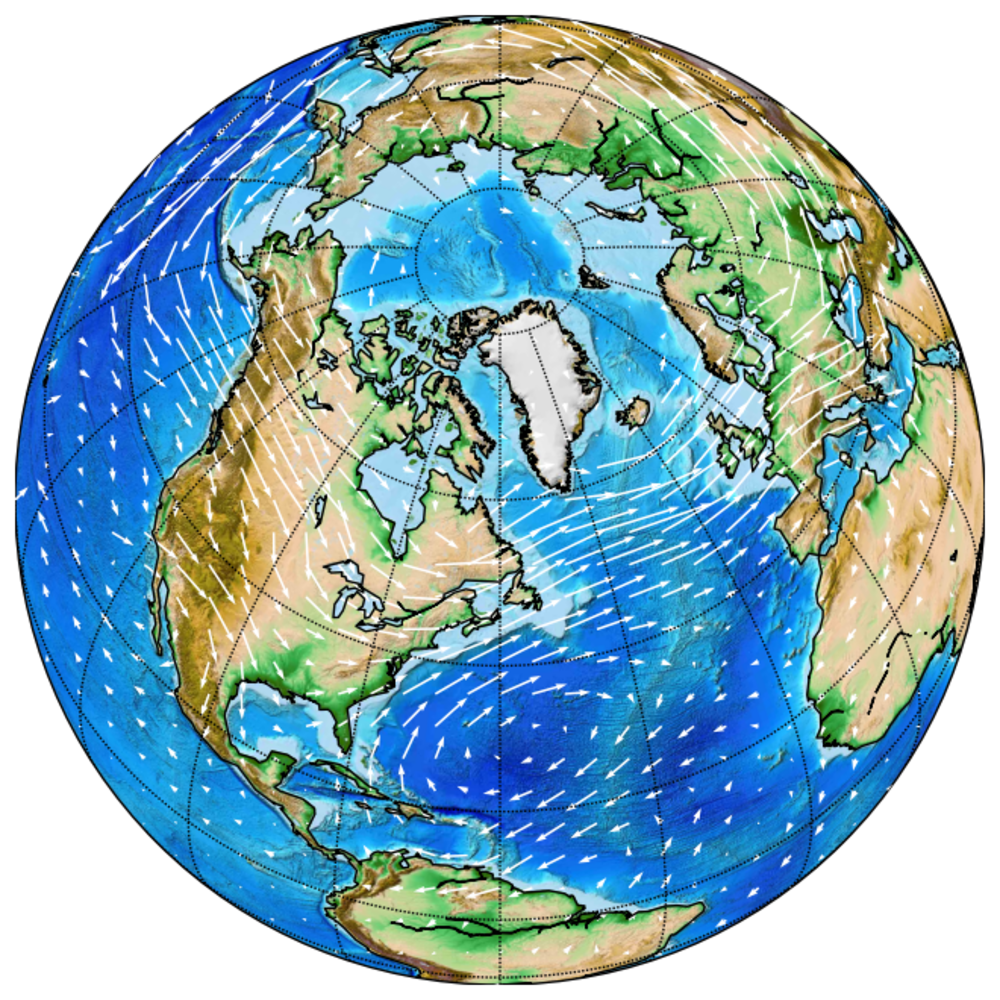
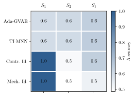
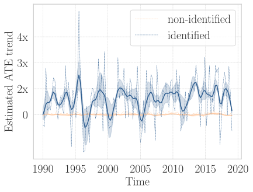

Marrying Causal Representation Learning with Dynamical Systems for Science
Phrasing parameter estimation in dynamical systems as latent-variable identification lets identifiable causal representation learning meet scalable differentiable solvers — and reach real climate data
Causal representation learning (CRL) promises to recover hidden causal variables from entangled measurements, but has lacked a successful real-world application; dynamical-systems models scale to countless applications but offer no parameter identification. This paper draws a precise connection between the two by phrasing parameter estimation in dynamical systems as a latent-variable identification problem in CRL. This makes identifiability theory available “for free” — full identifiability when the ODE’s functional form is known, partial identifiability via multiview supervision when it is not — while a scalable mechanistic solver acts as a differentiable decoder. The resulting “mechanistic identifier” isolates time-invariant, trajectory-specific physical parameters and is validated on known ODEs, a wind simulator, and real-world sea surface temperature, where it answers downstream causal questions about climate.
Two fields, one missing piece
Causal representation learning (CRL) sets out to provably recover high-level latent variables from low-level data (Schölkopf et al. 2021). The field has produced a wealth of identifiability results, yet — as the authors put it — there was no successful real-world application to point to; progress has largely been demonstrated on synthetic images with “made-up” latent causal graphs. Machine learning for dynamical systems sits at the opposite extreme: neural emulators of time series scale to countless real applications, but offer no guarantee that the parameters they learn relate to the true governing process.
This paper connects the two communities by phrasing parameter estimation in dynamical systems as a latent-variable identification problem in CRL. The payoff runs both ways: identifiability theory transfers “for free” from CRL to dynamical systems, and scalable differentiable solvers transfer from dynamical systems to CRL, giving — to the authors’ knowledge — the first avenue for applying CRL to real-world data. The authors are explicit that the contribution is this connection rather than a new method per se.
Setting: identifying physical parameters from trajectories
The starting point is an ordinary differential equation
\dot{\mathbf{x}}(t) = f_{\boldsymbol{\theta}}(\mathbf{x}(t)), \qquad \mathbf{x}(0) = \mathbf{x}_0, \quad \boldsymbol{\theta} \sim p_{\boldsymbol{\theta}}, \quad t \in [0, t_{\max}],
where the state \mathbf{x}(t) evolves under a smooth vector field f_{\boldsymbol{\theta}} characterized by physical parameters \boldsymbol{\theta}. The task is to recover \boldsymbol{\theta} from an observed trajectory \mathbf{x} = (\mathbf{x}_{\boldsymbol{\theta}}(t_0), \dots, \mathbf{x}_{\boldsymbol{\theta}}(t_T)). Two standard assumptions ground the analysis: existence and uniqueness of the solution for every \boldsymbol{\theta}, and structural identifiability — distinct parameters generate distinct trajectories, so \boldsymbol{\theta} is in principle recoverable.
The key observation is that these dynamical-systems assumptions line up exactly with the standard assumptions of CRL: existence-and-uniqueness implies a deterministic generative process with full support over the parameter domain, and structural identifiability implies the solver is injective in \boldsymbol{\theta}. This alignment is what justifies importing CRL’s identification machinery wholesale.
Three regimes of identifiability
The paper distinguishes three cases, depending on whether the functional form of f_{\boldsymbol{\theta}} is known.
Known functional form \Rightarrow full identifiability. When the ODE is known, an estimator \hat{\boldsymbol{\theta}} that minimizes the trajectory reconstruction loss \lVert F(\hat{\boldsymbol{\theta}}) - \mathbf{x}\rVert_2^2 — where F is the ODE solver — converges almost surely to the true \boldsymbol{\theta}. The authors note this is the principle that many ODE discovery methods (SINDy-like sparse regression, gradient matching) implicitly follow, even though most of them refrain from making identifiability statements.
Unknown functional form \Rightarrow non-identifiability in general. With the functional form unknown, the observed trajectory becomes an arbitrary nonlinear mixing of \boldsymbol{\theta}, and — invoking the impossibility result of Locatello et al. (2019) — the parameters are in general not identifiable from a single trajectory.
Weak supervision \Rightarrow partial identifiability. Identifiability is recovered by adding weak supervision in the form of paired trajectories that share a subset of parameters. Adapting the block-identifiability notion of Von Kügelgen et al. (2021), the shared partition \boldsymbol{\theta}_S is partially identified by an encoder g that minimizes a multiview objective with two terms,
\mathcal{L}(g, \hat{F}) = \mathbb{E}_{\mathbf{x}, \tilde{\mathbf{x}}} \underbrace{\lVert g(\mathbf{x})_S - g(\tilde{\mathbf{x}})_S \rVert_2^2}_{\text{alignment}} + \underbrace{\lVert \hat{F}(g(\mathbf{x})) - \mathbf{x} \rVert_2^2 + \lVert \hat{F}(g(\tilde{\mathbf{x}})) - \tilde{\mathbf{x}} \rVert_2^2}_{\text{sufficiency}},
where alignment pulls the shared coordinates of the two views together and sufficiency forces the representation to reconstruct each trajectory through a left-invertible solver \hat{F}. The authors stress this is one exemplary construction: many CRL identifiability results can be ported the same way, simply by replacing their decoder with a differentiable ODE solver.
The mechanistic identifier
Putting the pieces together yields a neural emulator the authors call a mechanistic identifier: a smooth encoder g maps the whole trajectory to the time-invariant parameter estimate \hat{\boldsymbol{\theta}}, and a scalable mechanistic neural network solver (Pervez et al. 2024) decodes \hat{\boldsymbol{\theta}} back into a trajectory. Identifiability comes from the CRL training construct; efficient forecasting comes from the differentiable solver, which represents the ODE as a constrained optimization problem solved in a time-parallel, GPU-friendly fashion. The latent regularizer (here, the multiview alignment term) is the only part that changes when swapping in a different CRL algorithm.

Experiments
The method is evaluated against three baselines: Ada-GVAE (Locatello et al. 2020), a multiview model with a vanilla (non-mechanistic) decoder; time-invariant MNN (TI-MNN) (Pervez et al. 2024); and a contrastive identifier, a decoder-free contrastive CRL approach in the spirit of Von Kügelgen et al. (2021), Daunhawer et al. (2023), and Yao et al. (2024).
Theory validation on known ODEs (ODEBench)
For systems with a known functional form, the authors validate full identifiability on 63 dynamical systems from ODEBench (d’Ascoli et al. 2024) plus a Cart-Pole system inspired by Yao et al. (2022). For each system, 100 parameter tuples are sampled (within valid ranges, e.g. preserving chaotic behaviour) and the parameter is estimated by regressing the predicted trajectory onto the observed one; the table reports root-mean-square error (RMSE) averaged over parameter dimensions and over the 100 runs. Point estimates are highly accurate across the board. A representative slice (the paper tabulates all 63 systems):
| System (ODEBench) | RMSE (mean \pm std) |
|---|---|
| Population growth with carrying capacity | 4\mathrm{e}{-5} \pm 2\mathrm{e}{-6} |
| SIR infection model (healthy / sick) | 4\mathrm{e}{-5} \pm 2\mathrm{e}{-5} |
| Lotka–Volterra (simple) | 9\mathrm{e}{-3} \pm 1\mathrm{e}{-3} |
| Van der Pol oscillator (standard form) | 4\mathrm{e}{-4} \pm 6\mathrm{e}{-5} |
| Lorenz equations (chaotic) | 4\mathrm{e}{-2} \pm 9\mathrm{e}{-3} |
| Cart-Pole (inverted pendulum) | 1\mathrm{e}{-4} \pm 6\mathrm{e}{-5} |
Wind simulation: isolating layer thickness
For an unknown functional form, the authors generate global wind-simulation trajectories (u, v velocity components) driven by varying layer-thickness parameters, and build multiview triples that share either the global simulation condition or only local features.

A 12-dimensional latent space is split into three 4-dimensional partitions S_1, S_2, S_3, and the layer thickness label is predicted from each. By construction it should live in S_1 — which is exactly what happens: both the contrastive and the mechanistic identifier reach accuracy \approx 1 in S_1 and low accuracy elsewhere, while Ada-GVAE and TI-MNN sit at roughly 60% accuracy everywhere, recovering no clean factor. This shows both the need for explicit time modelling via the mechanistic solver (vs. Ada-GVAE) and the identifying power of multiview CRL (vs. TI-MNN).

Real-world sea surface temperature (SST-V2)
The framework is then applied to the real-world SST-V2 sea-surface-temperature dataset (Huang et al. 2021). Multiview pairs are drawn from nearby regions (\pm 5^\circ) along the same latitude, which share climate properties (similar direct sunlight). Three downstream tasks probe the learned representation: out-of-distribution forecasting of held-out years, climate-zone classification (tropical / temperate / polar) in both in-distribution (ID) and OOD splits, and average treatment effect (ATE) estimation.
| Method | Acc. (ID) \uparrow | Acc. (OOD) \uparrow | Forecast error \downarrow |
|---|---|---|---|
| Ada-GVAE | 0.468 \pm 0.001 | 0.467 \pm 0.000 | 0.043 \pm 0.044 |
| TI-MNN | 0.697 \pm 0.049 | 0.668 \pm 0.074 | 0.024 \pm 0.016 |
| Contrastive identifier | \mathbf{0.904} \pm 0.011 | \mathbf{0.861} \pm 0.022 | — |
| Mechanistic identifier | \mathbf{0.902} \pm 0.005 | 0.824 \pm 0.016 | \mathbf{0.007} \pm 0.003 |
Both multiview CRL approaches far outperform Ada-GVAE and TI-MNN on climate-zone classification, supporting the applicability of identifiable CRL to real dynamical systems. On forecasting, the mechanistic identifier — which alone combines the multiview information bottleneck with the scalable solver — achieves the lowest error, underscoring the value of integrating mechanistic solvers.
Treatment effects and the global-warming signal
Finally, the authors estimate the average treatment effect of climate zone on latitudinal average temperature, with the binary treatment being tropical (T=0) vs. polar (T=1), the outcome being zonal average temperature, and the identified latitude-specific features as covariates. ATE is defined as \mathbb{E}[Y \mid \mathrm{do}(T=1)] - \mathbb{E}[Y \mid \mathrm{do}(T=0)] and estimated with the AIPW estimator (Robins et al. 1994).

The ATE computed from the identified representation shows a noisy but clear increasing trend — consistent with the global-warming effect documented in the climate literature — whereas the non-identified representation produces no discernible pattern, because it fails to isolate the covariates from the treatment.
Takeaways and limits
By recasting parameter estimation as latent-variable identification, the paper equips otherwise-unidentifiable mechanistic models with identification guarantees, and gives CRL its first demonstration on real-world scientific data. The authors are clear about the limitations: the theory assumes determinism (excluding stochastic differential equations), assumes the state is observed without measurement noise, and rests on an infinite-data regime — all natural targets for future work. Their broader hope is cross-pollination: scaling identifiable mechanistic models to richer dynamical systems and real scientific questions.
The figures on this page are reproduced from the original paper, which is released under CC BY 4.0. A copyable BibTeX entry for this page is generated below.
Citation
@inproceedings{yao2024,
author = {Yao, Dingling and Muller, Caroline and Locatello, Francesco},
title = {Marrying {Causal} {Representation} {Learning} with
{Dynamical} {Systems} for {Science}},
booktitle = {Advances in Neural Information Processing Systems
(NeurIPS)},
date = {2024-05-22},
url = {https://arxiv.org/abs/2405.13888}
}